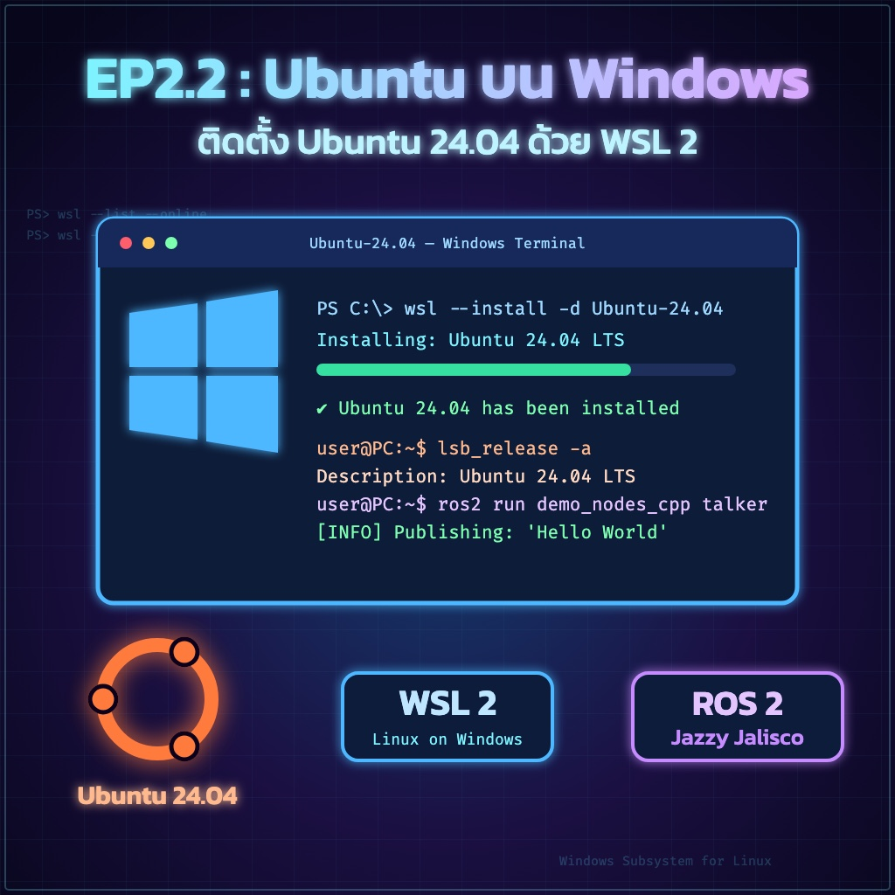
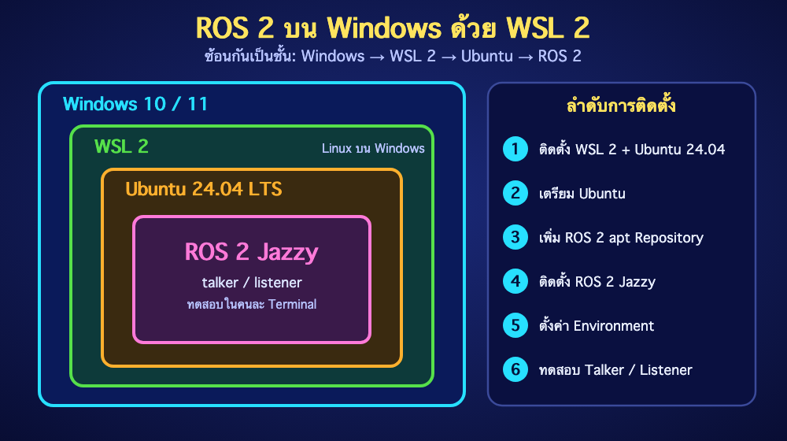

ย้อนกลับ

EP2.2
ติดตั้ง Ubuntu 24.04 บน Windows ด้วย WSL 2
"ตั้งค่า WSL 2 → ติดตั้ง Ubuntu 24.04 LTS → ติดตั้ง ROS 2 Jazzy → ทดสอบระบบอย่างครบขั้นตอน"
🎯 จุดประสงค์การเรียนรู้
ติดตั้งและตรวจสอบ WSL 2 กับ Ubuntu 24.04 LTS ได้
ติดตั้ง ROS 2 Jazzy จากแพ็กเกจ deb ตามขั้นตอนปัจจุบันได้
ทดสอบ talker/listener และวิเคราะห์ปัญหาพื้นฐานได้
เข้าใจข้อจำกัดของ WSL ก่อนนำไปใช้กับหุ่นยนต์จริง
ก่อนเริ่ม: Run as administrator เฉพาะขั้นตอนติดตั้ง WSL เท่านั้น
💻 1. ติดตั้ง WSL 2 และ Ubuntu 24.04

PowerShell (Administrator)
wsl --update
Restart Windows หากระบบร้องขอ จากนั้นเปิด Ubuntu 24.04 จาก Start Menu และตั้ง UNIX username กับ password ขณะพิมพ์รหัสผ่านจะไม่มีอักขระแสดงบนหน้าจอ ซึ่งเป็นพฤติกรรมปกติ
ตรวจสอบจาก PowerShell
wsl --status
✅ Expected Result: wsl --set-version Ubuntu-24.04 2
🐧 2. เตรียม Ubuntu
คำสั่งต่อจากนี้ให้รันใน Terminal ของ Ubuntu ไม่ใช่ PowerShell
# ตรวจรุ่นระบบ
✅ Expected Result:
🤖 3. เพิ่ม ROS 2 apt Repository
ใช้แพ็กเกจ ros2-apt-source เพื่อจัดการ key และ source configuration ให้ระบบอัปเดตได้ง่ายกว่าวิธีดาวน์โหลด ros.key แบบเดิม
sudo apt install software-properties-common curl -y
📦 4. ติดตั้ง ROS 2 Jazzy
Desktop — แนะนำสำหรับเครื่องเรียน
sudo apt install ros-jazzy-desktop ros-dev-tools -y
ROS-Base — สำหรับระบบไม่มี GUI
sudo apt install ros-jazzy-ros-base ros-dev-tools -y
Gazebo ไม่ได้หมายความว่าพร้อมใช้เพียงเพราะติดตั้ง ros-jazzy-desktop
⚙️ 5. ตั้งค่า Environment
# ใช้กับ Terminal ปัจจุบัน
✅ Expected Result:
🧪 6. ทดสอบ Talker/Listener
Terminal 1
source /opt/ros/jazzy/setup.bash
Terminal 2
source /opt/ros/jazzy/setup.bash
✅ Expected Result:
🧪 7. LAB — ตรวจสอบระบบหลังติดตั้ง
ใช้ ros2 node list ตรวจว่าเห็น /talker และ /listener
ใช้ ros2 topic list -t ตรวจ Topic และ Message Type
ใช้ ros2 topic echo /chatter อ่านข้อมูลโดยตรง
ใช้ ros2 topic hz /chatter วัดอัตราการส่ง
ros2 node list
⚠️ 8. Common Problems
อาการ
วิธีตรวจ/แก้
0x8007019e หรือ WSL ไม่ทำงาน
รัน wsl --update, Restart และตรวจ Virtualization ใน BIOS/UEFI
Ubuntu เป็น WSL 1
wsl --set-version Ubuntu-24.04 2
Unable to locate package ros-jazzy-desktop
ตรวจ Ubuntu ต้องเป็น 24.04, ติดตั้ง ros2-apt-source และ sudo apt update
ros2: command not found
source /opt/ros/jazzy/setup.bash
GUI หรือ RViz2 เปิดไม่ได้
อัปเดต WSL ด้วย wsl --update และตรวจ WSLg/ไดรเวอร์กราฟิก
ต่อ Serial/USB ไม่พบ
WSL ไม่ส่ง USB ทุกชนิดให้อัตโนมัติ ต้องวางแผน USB pass-through หรือรัน Hardware Node บน Linux จริง
🔐 9. ข้อควรระวัง
ไม่ควรรันคำสั่งติดตั้งจากแหล่งที่ไม่ทราบที่มา
อย่าผสม ROS 2 Humble กับ Jazzy ใน Environment เดียว
WSL เหมาะกับการเรียน CLI, Python และการพัฒนาเบื้องต้น แต่การเชื่อม Hardware/Realtime ควรทดสอบบน Ubuntu จริงหรือ Raspberry Pi ด้วย
📝 แบบฝึกหัดท้ายบท
อธิบายความแตกต่างระหว่าง WSL 1 และ WSL 2
คำสั่งใดใช้ตรวจว่า Ubuntu ใช้ WSL เวอร์ชันใด?
เหตุใด Jazzy จึงต้องใช้ Ubuntu 24.04 สำหรับ deb packages?
บันทึกผล ros2 topic list -t ขณะ talker/listener ทำงาน